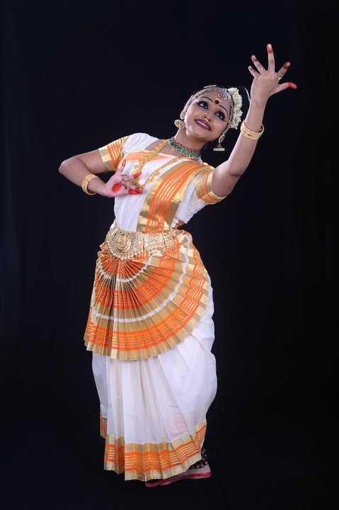

MOHINIYATTAM

In Indian mythology, Mohini is the female avatar of Lord Vishnu, and the meaning of Attam in Malayalam is rhythmic motion hence adhering to the dance of the divine enchantress. It is the second most popular dance form of Kerala. This classical Indian dance form roots from the age-old Sanskrit text - Natya Shastra. It is traditionally performed by women following a repertoire of Carnatic music, singing and acting a play. At times, the song, a typical hybrid of Malayalam and Sanskrit also called Manipravalam, is sung by the performer herself. With a repertoire of instruments such a Mridangam, Madhalam, Flute, Idakka, Veena and Kuzhitalam; the music is rendered in ragas and performed in a slow melodic style. Although the Lasya dance is often portrayed as gentle, graceful and feminine, it also exhibits a vigorous dance of Tandava relating to Lord Shiva. Besides its popularity, the dance was ridiculed by a series of laws as a devadasi prostitution system during the colonial British Raj. A ban that was protested repealed in 1940 and with the help of the locals of Kerala, Mohiniyattam was revived and reconstructed.